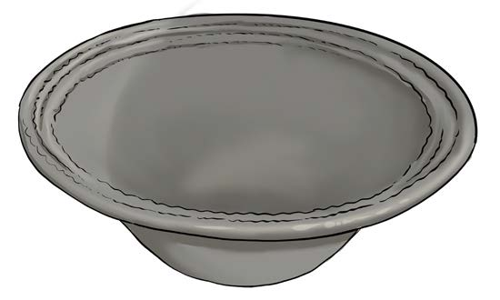
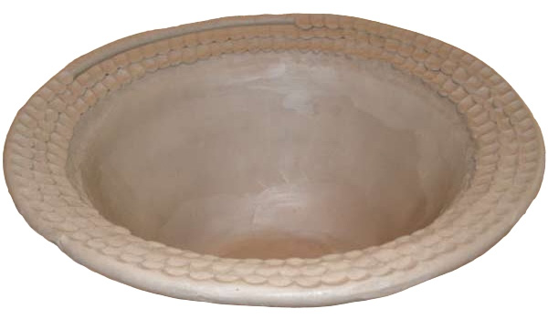

Figure 12: Levelling the lip of an object
(k)
Estimate the average height suitable for the object to prevent collapsing due to the wetness of the clay soil and the weight of the upper part.
To avoid this situation, leave the object open for a short time so that it gets a bit dry, and then continue to complete it, as shown in Figure 13;

Figure 13: The object is open to drain water
(l)
If you are resting for a bit, cover the object with a nylon sheet so that it doesn’t get completely dry before it is completed;
(m)
When smoothing the wall, do not use too much water.
The water will weaken the object;
(n)
Smoothen the inner and outer walls by using a smooth tool such as a piece of glass or a plastic sheet.
Also, you can smoothen just the inner part and leave the outer part as it is; and